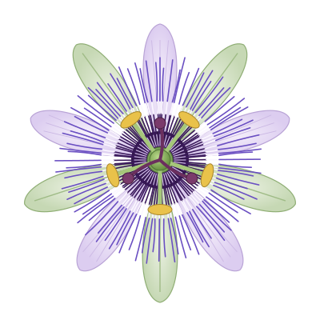

Carnet botanique
Les passiflores
Les passiflores sont des plantes à fleurs du genre Passiflora. Elles sont connues pour leurs fleurs très ornées, pour leur port grimpant et pour leurs fruits. Le nom « passiflore » vient du latin passio (passion) : des missionnaires y ont vu les symboles de la Passion du Christ.
Découvrir la fleur
Trois pages
La fleur, la plante et le fruit, chacun sur sa page.